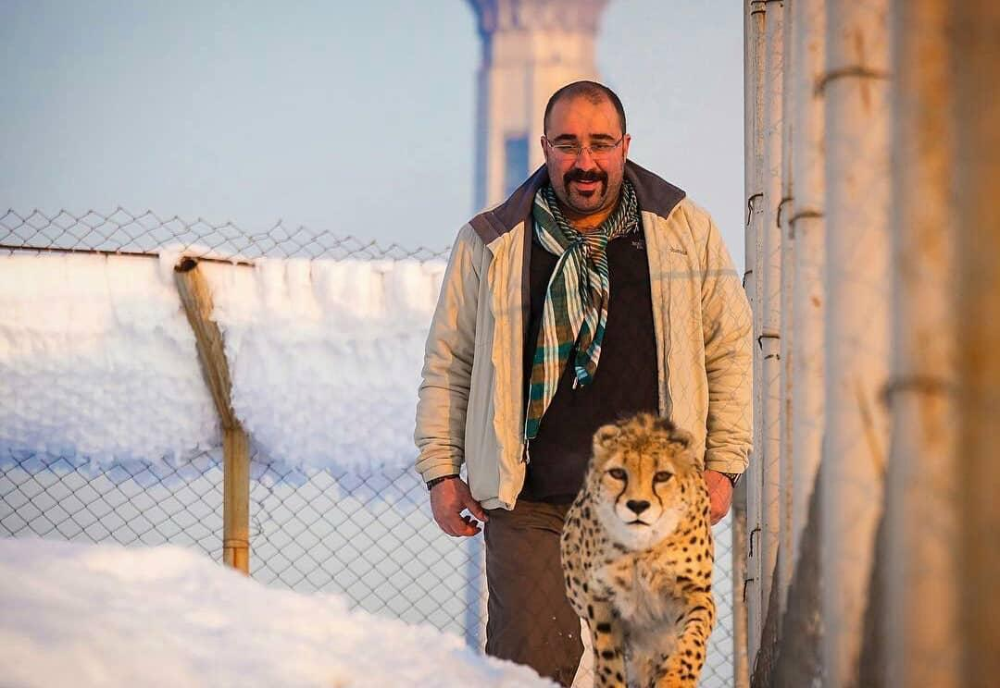

Dr. Iman Memarian, DVM
📍 Addresses
Iran: No. 191, 2nd Floor, Unit 4, Koohsar Blvd., Corner Of Hashemizadeh Street, Tehran 1478813541
U.S. (NC): 302 Dupont Circle, Greenville, NC 27858
U.S. (CA): Shayan Memarian’s residence, Los Angeles, CA
📞 Phone Numbers
Iran: +98 912 295 6918 (WhatsApp)
USA: +1 (252) 864-5929 (WhatsApp)

Welcome
I am Dr. Iman Memarian, a Wildlife Veterinarian and Conservationist specializing in wildlife health, zoo and exotic animal medicine, and One Health approaches. Explore my work and feel free to connect with me through the links below.
Contact Me
You can connect with me through the following platforms:
📄 Download CV
Download CV (PDF)